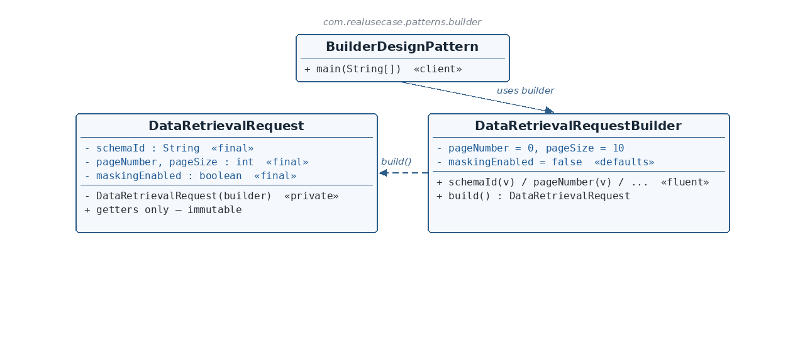

DataRetrievalRequest.java — the immutable product
☕ 4 min read · 🎬 Video walkthrough · 📊 UML diagram · 💻 Runnable code
⚡ In a nutshell — Separate the construction of a complex object from its final representation, so the same step-by-step construction process can produce a fully-formed, immutable object — no telescoping constructors, no half-initialized objects, no setters left accidentally uncalled.
Separate the construction of a complex object from its final representation, so the same step-by-step construction process can produce a fully-formed, immutable object — no telescoping constructors, no half-initialized objects, no setters left accidentally uncalled.
Builder shines when an object has several optional parameters with sensible defaults: callers set only what they care about, in any order, and finish with one explicit build().
Data-retrieval APIs take requests with many optional knobs: which schema to read, which page, what page size, whether sensitive fields should be masked. Most callers only care about one or two of these. Without Builder you end up with either a dozen overloaded constructors (the telescoping constructor anti-pattern) or a mutable bean whose setters can be forgotten or called after use. This module models the production fix: an immutable DataRetrievalRequest that can only be created through its fluent DataRetrievalRequestBuilder — the same shape Lombok's @Builder generates on real Mobius request/DTO classes.
DataRetrievalRequest is the product: all fields final, constructor private, getters only. Once built, it can never change.DataRetrievalRequestBuilder is a static nested builder: it holds the same fields mutable, pre-loaded with defaults (pageNumber = 0, pageSize = 10, maskingEnabled = false).this, so calls chain naturally.build() is the single point where the finished, immutable product is created — it hands the builder to the product's private constructor, which copies every value.
Reading the diagram: the client only talks to the builder — it chains fluent setters and calls build(). The product's constructor is private, so the builder's build() is the only door into existence for a DataRetrievalRequest. The dashed arrow shows build() creating the product.
DataRetrievalRequest — The product — immutable (final fields, private constructor, getters only).DataRetrievalRequestBuilder — Static nested builder — mutable staging area with defaults, fluent setters, and build().BuilderDesignPattern — The client — chains the fluent calls and receives the finished product.public class DataRetrievalRequest {
private final String schemaId;
private final int pageNumber;
private final int pageSize;
private final boolean maskingEnabled;
private DataRetrievalRequest(DataRetrievalRequestBuilder builder) {
this.schemaId = builder.schemaId;
this.pageNumber = builder.pageNumber;
this.pageSize = builder.pageSize;
this.maskingEnabled = builder.maskingEnabled;
}
...
}
private final — they must be assigned exactly once, in the constructor, and can never change afterwards. This is what makes the product thread-safe to share and impossible to observe half-built.private and takes the builder itself — no outside code can call new DataRetrievalRequest(...). The only path to an instance is builder.build(). Copying from the builder in one place keeps the mapping explicit and total.public static class DataRetrievalRequestBuilder {
private String schemaId;
private int pageNumber = 0;
private int pageSize = 10;
private boolean maskingEnabled = false;
public DataRetrievalRequestBuilder schemaId(String schemaId) {
this.schemaId = schemaId;
return this;
}
...
public DataRetrievalRequest build() {
return new DataRetrievalRequest(this);
}
}
static — the builder does not need an existing product to exist (there is none yet). It is addressed as DataRetrievalRequest.DataRetrievalRequestBuilder, keeping it namespaced under its product.pageNumber = 0, pageSize = 10, maskingEnabled = false) — a caller who sets nothing still gets a valid, sensible request. This is the pattern's answer to optional parameters.this — that single design choice is what makes chained calls like .schemaId("s").pageSize(50) read like a sentence.build() hands the completed builder to the product's private constructor — legal because a nested class can access its enclosing class's private members. This is the one and only place a product is ever created.BuilderDesignPattern.java — the clientDataRetrievalRequest request = new DataRetrievalRequest.DataRetrievalRequestBuilder()
.schemaId("schema-1").pageNumber(2).pageSize(50).maskingEnabled(true).build();
System.out.println("schemaId=" + request.getSchemaId() + " page=" + request.getPageNumber()
+ " size=" + request.getPageSize() + " masking=" + request.isMaskingEnabled());
build(). The result is a finished, immutable request. The print line reads every field back through getters, confirming all values landed.new Request("s", 2, 50, true) say nothing about which argument is which. The fluent builder names every value at the call site.$ java -cp target/classes com.realusecase.patterns.BuilderDesignPattern
schemaId=schema-1 page=2 size=50 masking=true
@Builder — generates exactly this structure on production DTOs and request objects.StringBuilder, Stream.Builder, HttpRequest.newBuilder() in the JDK.UriComponentsBuilder, WebClient.builder() in Spring; OkHttpClient.Builder; protobuf message builders.Set only what you care about, in any order — then build() once, and the object can never change again.
👏 Found this useful? Give it a few claps so more developers discover it, and follow for the whole series — every article ships with a UML diagram, runnable code, a narrated video, and a companion PDF. Happy building! 🚀